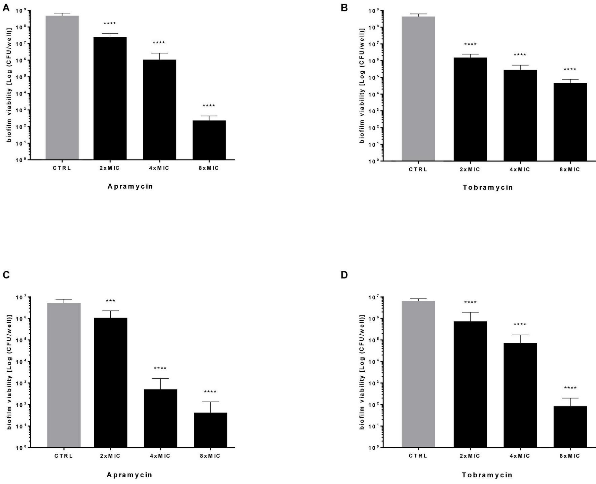

Repurposing the Veterinary Antibiotic Apramycin for Antibacterial and Antibiofilm Activity Against Pseudomonas aeruginosa From Cystic Fibrosis Patients

La domanda
Qual è l’attività dell’apramicina, confrontata con tobramicina, contro P. aeruginosa associato alla fibrosi cistica?
Il modello
Lo studio considera 24 isolati clinici, crescita e uccisione batterica, biofilm maturi, espressione di geni selezionati e cellule bronchiali IB3-1.
Il risultato
L’apramicina ha mostrato attività antibatterica e ha ridotto la vitalità del biofilm nelle condizioni esaminate. La biomassa poteva aumentare: una misura della struttura non coincide con una misura delle cellule vive.
Il significato
Il lavoro sostiene ulteriori studi sull’apramicina e sull’esposizione al farmaco. I risultati in vitro non ne dimostrano l’efficacia clinica nelle infezioni respiratorie umane.